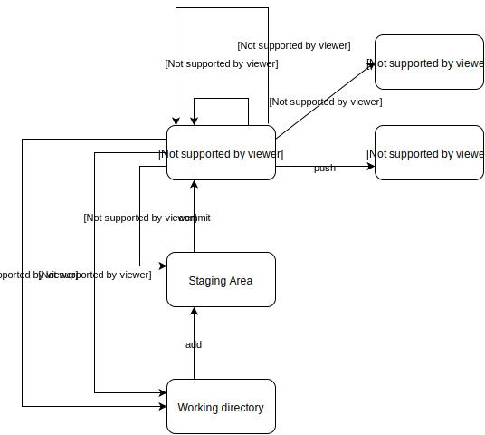

GIT状态图
前言
使用git，也有一段时间了，但是对git集中状态没有比较清晰的一个认识，尤其是涉及到代码回滚，直到最近阅读了git的官方文档（文档是个好东西，你值得拥有），画了一张图来帮助自己理顺git的套路。
一言不合就上图
git 的三种状态
git在本地，有三个状态，工作区，暂存区，本地仓库。事实上，当你开始对本地的仓库的代码下手修改的时候，你的修改都是存在工作区的，这些修改对git不可见，当然，我们会有一些修改时不想存到git上的，有些觉得修改的差不多是可以提交到git上的，那么就将你希望保存的修改 git add 到暂存区，作为一个快照保存下来，你可以多次add 自己目前的修改。当你所有的想要提交的修改都准备好了的时候，就可以使用 git commit 将暂存区中的修改提交到本地仓库，这就已经被git所记录了，有他自己的commitID，可以使用 git log 来查看，最后就是讲本地修改push到远端仓库
git 的代码回滚
实际码代码的过程中，可能不会这么顺利，比如我改着改着觉得这么写行不通，我就可以将工作区回滚到本地仓库的某一状态，放弃当前的修改，这可以使用reset --hard 和 checkout 命令来实现这个需求。
说到 reset ，我们可以看到图中reset 标注了三种参数 ：--hard ,--mixed ,--soft .当使用 soft mode时，仅重置本地仓库的代码，意味着 你已经在工作区和暂存区修改的代码不会被重置，你可以继续在刚才的修改基础上开发，而不用担心自己的工作小时不见。当使用 mixed mode 时 也就是 reset 的默认mode，不仅本地仓库的代码会回滚，暂存区的代码也会回滚，而你在工作区的修改却不会被抛弃，这意味着，你add带暂存区的快照都不见了，不过你的修改并没有小时，你可以从工作区再add到暂存区。同学们，重点（敲黑板），当你使用 --hard mode 时 你需要对自己的行为有个清醒的认知，那就是你基于回滚commitID版本所做的代码修改都将消失不见！换句话说，一夜回到解放前！
checkout 和 reset 有相似的功能的使用，既可以作用到repo层面，也可以具体指定到某个文件。repo层面我们最熟悉的就是使用chekout切到指定分支的操作了。